Modelos Probabilísticos Matriciais para Dados de Sensoriamento Remoto
PPGE | Estatística | UFPE
Estrutura da Apresentação
- Imagem de Sensoriamento Remoto
- Dados PolSAR
- Modelagem de dados PolSAR
- Resultados e Conclusões
Introdução
RADAR é um acrônimo de Radio Detection and Ranging
Ele é baseado nos princípios de propagação eletromagnética, em que uma onda eletromagnética é emitida por uma fonte e é retroespalhada para o radar
Uma imagem de radar é o resultado de uma interação entre a energia emitida pelo radar e o objeto sob estudo, e a aparência da imagem é influenciada pela forma e a textura do alvo;
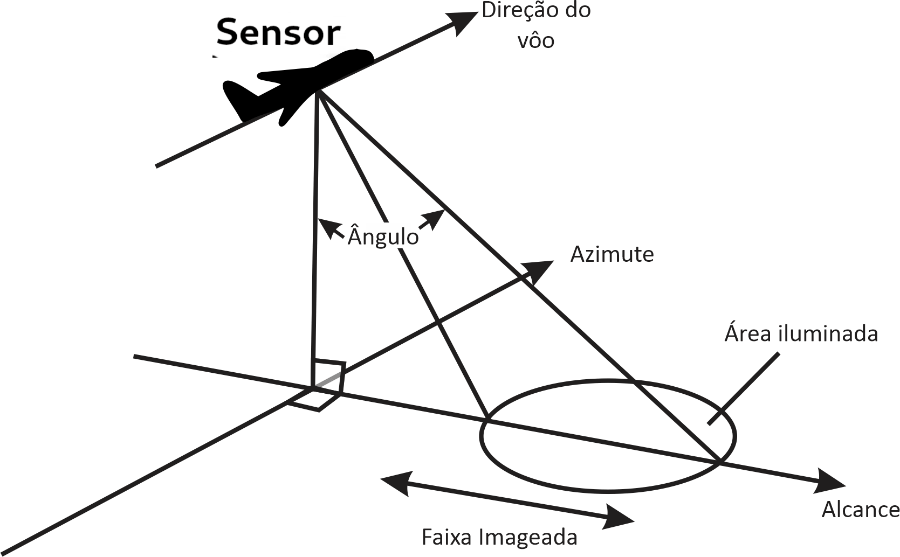
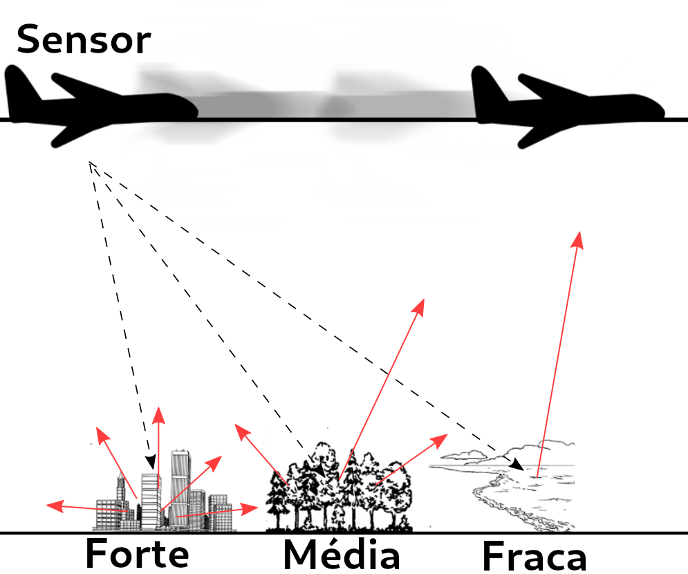
Introdução
Radar de Abertura Sintética (Synthetic Aperture Radar - SAR) geralmente são estão acoplado a uma plataforma que transmite micro-ondas ao longo de sua rota planejada em direção a um cenário geográfico;
Pulsos são emitidos em direção ao cenário e o radar recebe os sinais de retorno que são processados para formar uma imagem, estes podem ser na polarização circular ou linear.
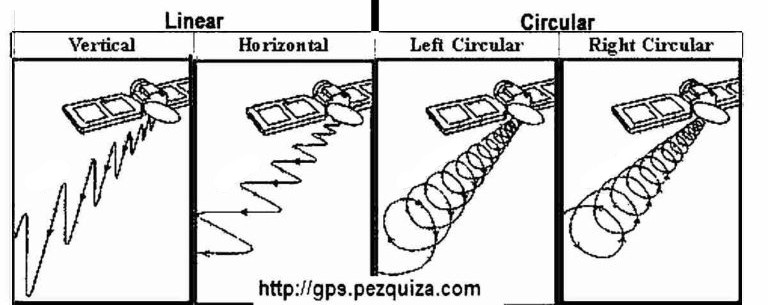
- Quando apenas um par de direções é usado, as imagens geradas são chamadas de SAR monopolarizadas e, quando várias direções são usadas, o processo é chamado de PolSAR (SAR Polarimétrico);
Introdução
Vantagens
- Images SAR podem ser obtidas de qualquer lugar (terra, mar, ar);
- a qualquer momento (dia ou noite);
- em quase todas as condições climáticas (nuvens, chuva);
- produzem imagens de alta resolução (alta largura de banda) das superfícies estudadas;
Desvantagens
- custo elevado para aquisição e manutenção dos satélites e radares;
- as imagens são afetadas por um ruído chamado speckle, que cria uma aparência granulada nas imagens, dificultando a interpretação e análise;
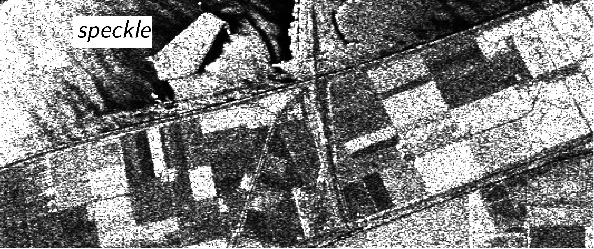
Introdução
Speckle em imagem SAR.
Dados Polarimétricos multi-look
- Cada entrada de uma image PolSAR é associada com os elementos da seguinte matriz:
\[ \mathbf{S}=\left( \begin{array}{cc} S_{hh} & S_{hv} \\ S_{vh} & S_{vv} \end{array} \right) \label{matrizpolar} \]
em que \(S_{hh}\), \(S_{hv}\), \(S_{vh}\) e \(S_{vv}\) são os coeficientes de espalhamento complexos do alvo para os respectivos canais de polarização, e os subscritos \(h\) e \(v\) representam a polarização horizontal e vertical, respectivamente, e,
\[ S_{rs} = A_{rs} e^{i \phi_{rs}} = \mathrm{Re}(S_{rs}) + i \mathrm{Im}(S_{rs}) \]
em que \(\mathrm{Re}(S_{rs})\) e \(\mathrm{Im}(S_{rs})\) são as partes real e imaginária do coeficiente de espalhamento, respectivamente, e \(i\) é a unidade imaginária, \(A_{rs}\) é a amplitude do coeficiente de espalhamento e \(\phi_{rs}\) é a fase do coeficiente de espalhamento, para \(r,s \in \{h,v\}\).
Dados Polarimétricos multi-look
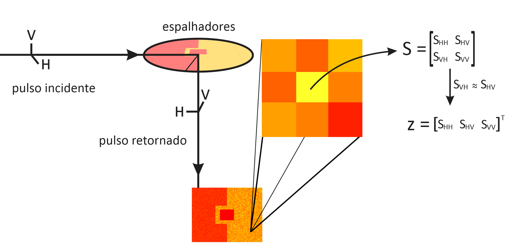
- Na prática, as polarizações cruzadas são muito semelhantes; ou seja, \(S_{hv} \approx S_{vh}\).
Dados Polarimétricos multi-look
- Dados PolSAR single-look não levam em conta o controle do efeito speckle sobre as imagens
- Um processo para contornar isso é chamado de processamento multi-look
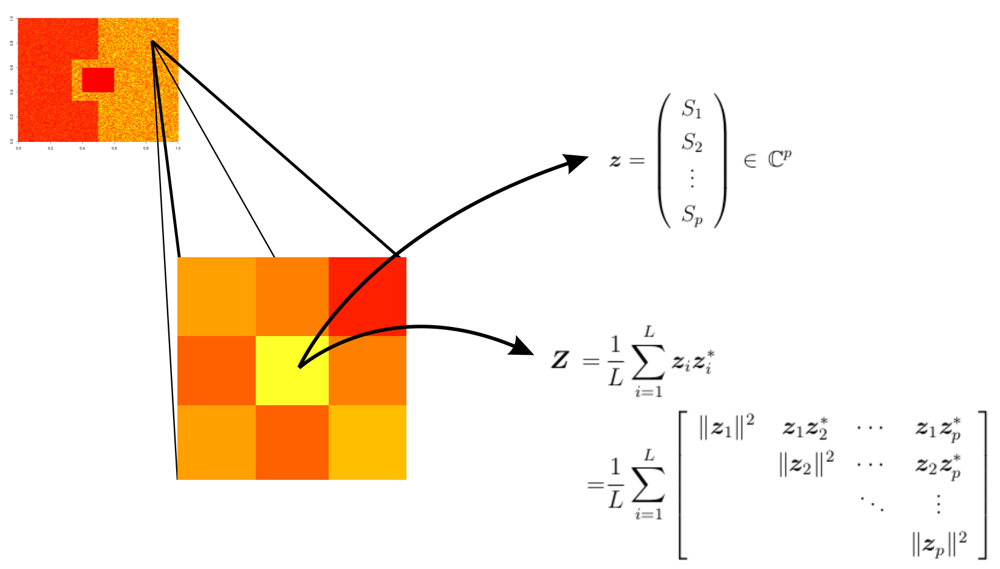
Dados Polarimétricos multi-look
\(\mathbf{z}_i = (S_1^{(i)}\,S_2^{(i)}\,\cdots\,S_p^{(i)})^{\top} \, \in \mathbb{C}^{p}\) é o \(i\)-ésimo vetor associado a \(p\) canais de polarização em uma amostra de \(L\) informações extraídas da mesma cena, para \(i=1,\ldots,L\).
Dados Polarimétricos multi-look
- Uma imagem PolSAR pode ser entendida como uma cena, na qual cada entrada está associada a uma matriz hermitiana definida positiva, o que requer o uso de métodos de processamento multivariado
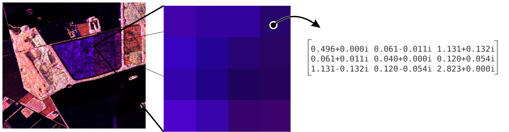
Modelagem Estatística
Retroespalhadores
- Tomando apenas um canal de polarização, sabe-se que se o número de espalhadores, diga-se \(n\), em uma célula de resolução for grande o suficiente e aproximadamente constante entre diversos pixels, então o sinal eletromagnético retornado
\[ S_{rs} = \sum_{k=1}^N S^{(k)}_{rs} = \sum_{k=1}^N A_{rs}^{(k)} e^{i \phi_{rs}(k)}, \]
segue a lei Gaussiana complexa, em que \(S^{(k)}_{rs}\) é a quantidade de valor complexo que representa o espalhador individual.
Modelagem Estatística
Retroespalhadores
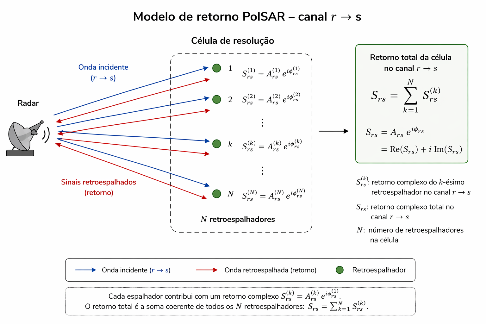
Como o número de retroespalhadores mudam entre as células de resolução, é interessante que ele seja descrito como uma variável aleatória, diga-se \(N\).
Modelagem Estatística
Modelos da literatura e formulação física das novas propostas
- Há evidências de que a distribuição Wishart complexa pode representar o retorno PolSAR de cenários homogêneos.
- As distribuições Poisson truncada e geométrica podem ser usadas para modelar a quantidade de sinais retornados em uma célula de resolução.
- Combinando essas duas evidências, propomos a soma aleatória da distribuição Wishart complexa com o número de termos seguindo as leis Poisson truncada e geométrica como dois descritores para o retorno de dados PolSAR.
Modelagem Estatística
Novos modelos
Primeiramente, seja \(\mathbf{Z}_i\sim \mathcal{W}_{m}^{\mathbb{C}}(\mathbf{\Sigma},L)\) para \(i=1,\ldots,N\) com função densidade de probabilidade
\[\begin{align} \begin{array}{lr} f({\dot{\mathbf{Z}}_i}) = \frac{|{\dot{\mathbf{Z}}_i}|^{L-m}}{|\mathbf{\Sigma}|^L\Gamma_m(L)} \exp \left\{ - \operatorname{tr} \left(\mathbf{\Sigma}^{-1}{\dot{\mathbf{Z}}_i} \right) \right\} \, \mathbb{I}_{ \mathbf{ \Omega }_+ } ( \dot{ \mathbf{S} } ) \end{array} \end{align}\]
em que \(\Gamma_m(L)\) é a função gama multivariada. Então, seja \(\mathbf{S}_k=\sum_{i=1}^k\mathbf{Z}_i\sim \mathcal{W}_{m}^{\mathbb{C}}(\mathbf{\Sigma},kL)\) e a matriz de coerência por célula segue a soma composta \[\mathbf{S}=\sum_{i=1}^N\mathbf{Z}_i\] com \(N\sim \text{TPo}(\lambda)\), logo a densidade é dada por
Modelagem Estatística
Novos modelos
\[\begin{align*} \begin{array}{lr} \begin{array}{rl} f({\dot{\mathbf{S}}}) &=\sum_{k=1}^\infty P(N=k)f_{\mathbf{S}_k}({\dot{\mathbf{S}}})\,\mathbb{I}_{\mathbf{\Omega}_+}(\dot{\mathbf{S}}) \\ &= \left(\frac{1}{\mathrm{e}^\lambda-1}\right) \sum_{i=1}^\infty\frac{\lambda^k}{k!}f_{\mathcal{W}_{m}^{\mathbb{C}}(\mathbf{\Sigma},kL)}({\dot{\mathbf{S}}}) \\ &=\left(\frac{\mathrm{e}^{-\operatorname{tr}\left(\mathbf{\Sigma}^{-1}{\dot{\mathbf{S}}}\right)}}{|{\dot{\mathbf{S}}}|^m\left(\mathrm{e}^\lambda-1\right)}\right)\sum_{i=1}^\infty\frac{\left(\lambda|\mathbf{\Sigma}^{-1}{\dot{\mathbf{S}}}|^L\right)^k}{k!\Gamma_m(kL)}, \end{array} \end{array} \end{align*}\]
em que \({\dot{\mathbf{S}}}=\{s_{i,j}\}\) é uma possível realização de \({\mathbf{S}}=\{S_{i,j}\}\).
Esta situação é denotada por \(\mathbf{S}\sim \text{CPT}\mathcal{W}_{m}^{\mathbb{C}}(\lambda,\mathbf{\Sigma},L)\).
Modelagem Estatística
Novos modelos
Agora assuma que \(N\sim \text{Geo}(p)\) e \(\mathbf{Z}_i\sim \mathcal{W}_{m}^{\mathbb{C}}(\mathbf{\Sigma},L)\) para \(i=1,\ldots,N\), a matriz de coerência por célula segue a soma composta \(\mathbf{S}=\sum_{i=1}^N\mathbf{Z}_i\) com densidade
\[\begin{align*} \begin{array}{lr} \begin{array}{rl} f({\dot{\mathbf{S}}}) &=\sum_{k=1}^\infty P(N=k)f_{\mathbf{S}_k}(\dot{\mathbf{S}}) \mathbb{I}_{\mathbf{\Omega}_+}(\dot{\mathbf{S}}) \\ &= \left( \frac{ p\mathrm{e}^{-\operatorname{tr}\left(\mathbf{\Sigma}^{-1}{\dot{\mathbf{S}}}\right)} }{ (1-p)|{\dot{\mathbf{S}}}|^m } \right) \sum_{k=1}^\infty \frac{ \left((1-p)|\mathbf{\Sigma}^{-1}{\dot{\mathbf{S}}}|^L\right)^k }{ \Gamma_m(kL) }\,\mathbb{I}_{\mathbf{\Omega}_+}(\dot{\mathbf{S}}). \end{array} \end{array} \end{align*}\]
Essa situação é denotada como \(\mathbf{S}\sim \text{CG}\mathcal{W}_{m}^{\mathbb{C}}(p,\mathbf{\Sigma},L)\).
Modelagem Estatística
Novos modelos
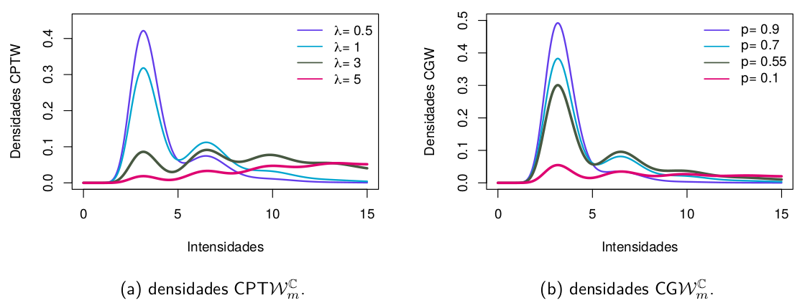
Densidades marginais das distribuições \(\text{CPT}\mathcal{W}_{m}^{\mathbb{C}}\) e \(\text{CG}\mathcal{W}_{m}^{\mathbb{C}}\).
- Os EMVs para os parâmetros para as ditribuições \(\text{CPT}\mathcal{W}_{m}^{\mathbb{C}}\) e \(\text{CG}\mathcal{W}_{m}^{\mathbb{C}}\) foram obtidos por meio do algoritmo EM.
Modelagem Estatística
Novos modelos
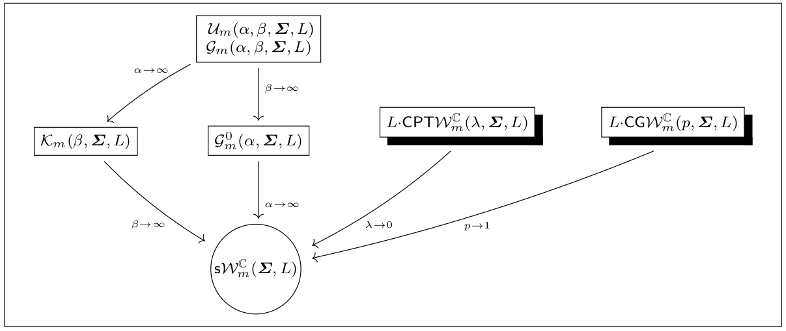
Diagrama das relações entre distribuições PolSAR. Aqui, o vetor de parâmetros ( \(\alpha , \beta , \lambda , p\) ) representa a forma, \(\mathbf{\Sigma}\) denota um tipo de locação ou uma matriz de dispersão e \(L\) é o Número Estimado de Looks.
Resultados
Análise de dados reais
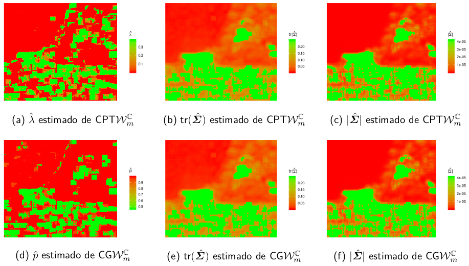
Mapas dos parâmetros estimados das distribuições \(\text{CPT}\mathcal{W}_{m}^{\mathbb{C}}\) (acima) e \(\text{CG}\mathcal{W}_{m}^{\mathbb{C}}\) (em baixo) para a imagem São Francisco.
Resultados
Análise de dados reais
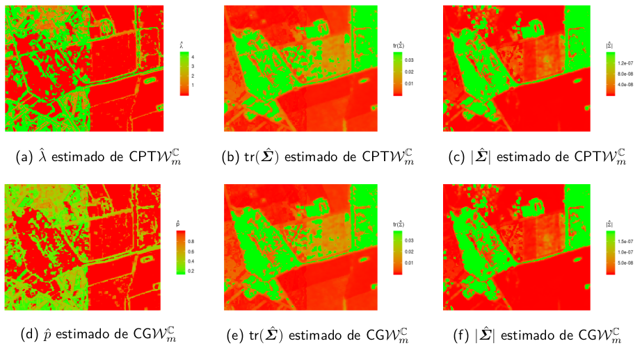
Mapas dos parâmetros estimados das distribuições \(\text{CPT}\mathcal{W}_{m}^{\mathbb{C}}\) (acima) e \(\text{CG}\mathcal{W}_{m}^{\mathbb{C}}\) (em baixo) para a imagem Foulum.
Resultados
Análise de dados reais
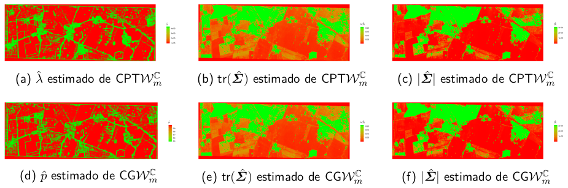
Mapas dos parâmetros estimados das distribuições \(\text{CPT}\mathcal{W}_{m}^{\mathbb{C}}\) (acima) e \(\text{CG}\mathcal{W}_{m}^{\mathbb{C}}\) (em baixo) para a imagem DEMMIN-Görmin.
Resultados
Análise de dados reais
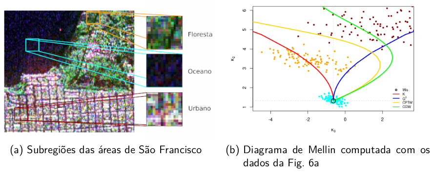
Diagrama de Mellin com amostra de MLCs calculados a partir das amostras de São Francisco.
Resultados
Análise de dados reais
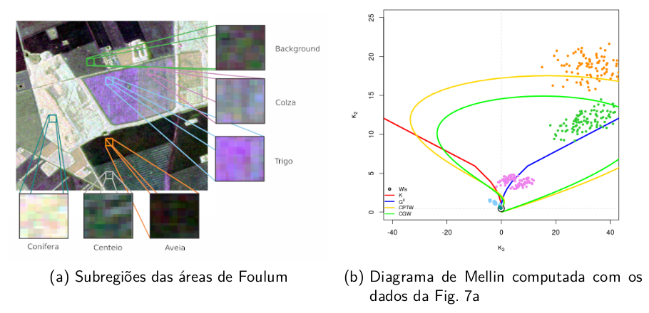
Diagrama de Mellin com amostra de MLCs calculados a partir das amostras de Foulum.
Resultados
Análise de dados reais
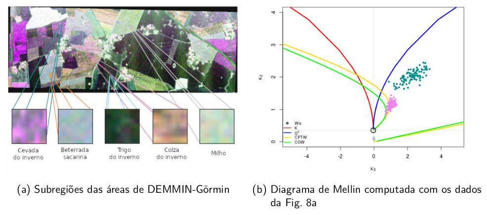
Diagrama de Mellin com amostra de MLCs calculados a partir das amostras de DEMMIN-Görmin.
Conclusões
- Foram propostas novas distribuições para dados PolSAR multilook usando a abordagem de soma estocástica para descrever dados multimodais.
- Elas foram denominadas como composta Poisson truncada Wishart complexa (\(\text{CPT}\mathcal{W}^\mathbb{C}_m\)) e composta geométrica Wishart complexa (\(\text{CG}\mathcal{W}^\mathbb{C}_m\)).
- Algumas propriedades matemáticas das distribuições são derivadas, tais como as funções características (fc) e cumulantes de Mellin.
- Novos mecanismos de estimação por máxima verossimilhança via algoritmo EM (Expectation-Maximization) são derivados e avaliados por experimentos Monte Carlo.
Conclusões
Esses resultados podem ser encontrados no artigo publicado na Remote Sensing:
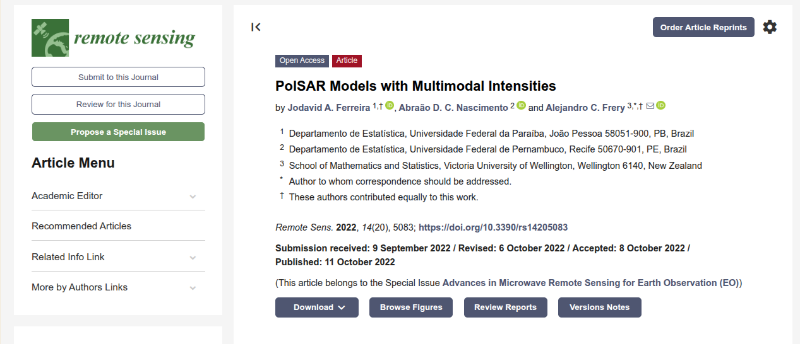
Autores: Ferreira, J.A., Nascimento, A.D.C. & Frery, A.
Ano: 2022 - DOI (link): 10.3390/rs14205083
Referências
Ferreira, J.A.; Nascimento, A.D.C.; Frery, A.C. PolSAR Models with Multimodal Intensities. Remote Sens. 2022, 14, 5083.
Anfinsen, S.N.; Doulgeris, A.P.; Eltoft, T. Goodness-of-Fit Tests for Multilook Polarimetric Radar Data Based on the Mellin Transform. IEEE Trans. Geosci. Remote Sens. 2011, 49, 2764 –2781.
Nascimento, A.D.; Rêgo, L.C.; Nascimento, R.L. Compound truncated Poisson normal distribution: Mathematical properties and Moment estimation. Inverse Probl. Imaging 2019, 13, 787–803.
Freitas, C.C.; Frery, A.C.; Correia, A.H. The Polarimetric G Distribution for SAR Data Analysis. Environmetrics 2005, 16, 13–31.
Lee, J.S.; Schuler, D.L.; Lang, R.H.; Ranson, K.J. K-distribution for multi-look processed polarimetric SAR imagery. In Proceedings of the International Geoscience and Remote Sensing Symposium (IGARSS’1994), Pasadena, CA, USA, 8–12 August 1994; Volume 4, pp. 2179–2
Contato:
e-mail: jodavid.ferreira@ufpe.br
Site Pessoal: https://jodavid.github.io/
Lattes: http://lattes.cnpq.br/4617170601890026
LinkedIn: jodavidferreira
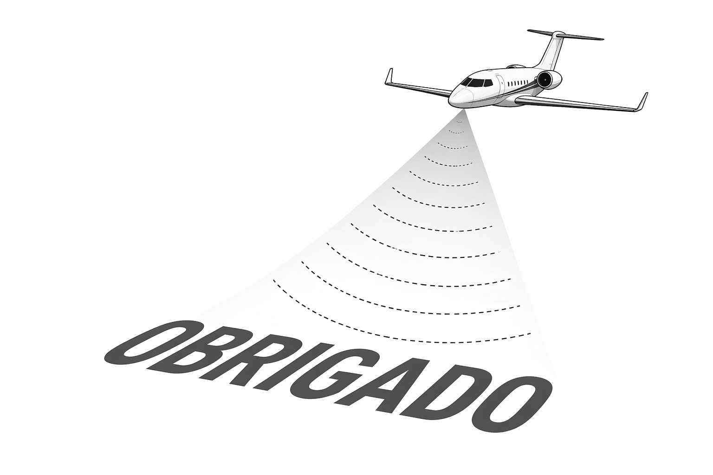

Modelos Probabilísticos Matriciais para Dados de Sensoriamento Remoto - Jodavid Ferreira